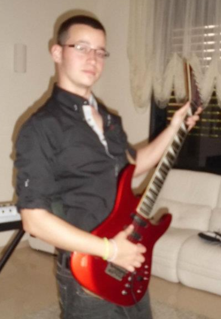

His Photos

Yossi at his natural position

mini Yossi AKA Yossi 2.0

Yossi the rat slayer

Yossi with eminem

Yossi wiyh Guns&Roses

commando Yossi in the chinese farm

commando Yossi crossing the canel

Special agent 00Yossi